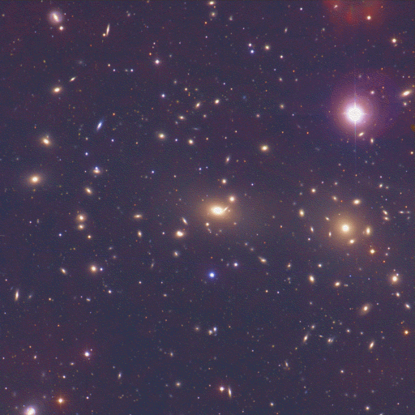

Figure 1-9
At a distance between 350 and 500 million light-years from Earth, the Coma cluster of galaxies, containing over 800 galaxies, teaches us how quantitatively insignificant is a a single galaxy. The recessional velocity of this cluster is over 15 million miles per hour. (National Optical Astronomy Observatories)